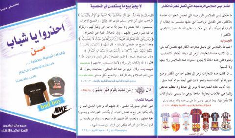

Downloads need an internet connection.
احذروا يا شباب من كلمات أجنبية خطيرة ورموز وشعارات الكفار على ملابسنا
Authors: محمد بن صالح العثيمين
**▫️ العنوان: احذروا يا شباب من كلمات أجنبية خطيرة ورموز وشعارات الكفار على ملابسنا** ▪️ المؤلف: #محمد_صالح_العثيمين ▫️ الطبعة: 1 ▪️ عدد الأجزاء: 1 ▫️ الصفحات: 2 ▪️ نوع الوعاء: #مطوية ▫️ التصنيف الرئيسي: #الدعوة_والاحتساب ۪